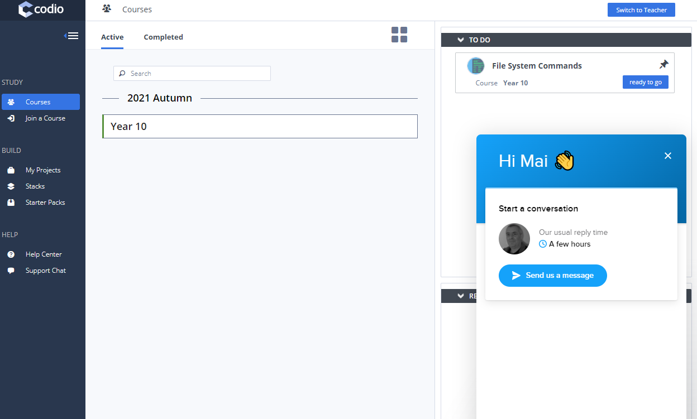
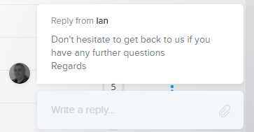
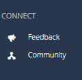
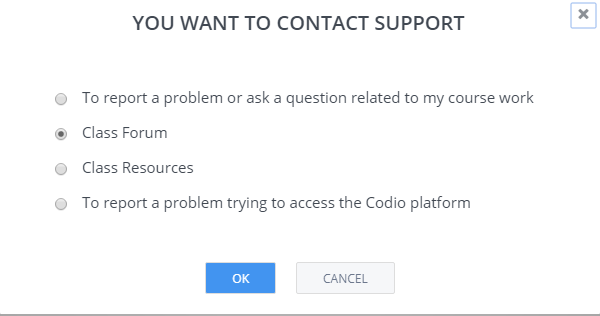

Codio Support¶
If you need support, then the most effective way is to use our integrated support system. You will find this in the dashboard and the IDE.
Dashboard¶
Support is available in the dashboard from the Chat link on the left.
IDE¶
Support is available within the IDE from the Help menu item, then Support.
Support Dialog¶
There is a support dialog that appears when you invoke the support option. This tracks all conversations and threads you have had with Codio and where you can also start a new conversation.

If you are in Codio, you can see when a reply to your query arrives even if you have closed the support dialog box

An email will also be sent to you if you do not see the reply within 2 minutes or have logged out of your Codio account
Feedback¶
We are always interested to hear from our users about their thoughts/ideas for future improvements. To raise an idea or vote on other ideas already raised, either click on Feedback in your dashboard area or go to Codio Feedback directly.

Community¶
The Codio community forum is a place for Codio users to engage with each other and share best practices. You can access it from the Connect area or go to Codio Community directly.
This forum does not replace our in-product customer support chat or our help center, please continue to use the support chat for product issues, and refer to our help center for product use guidance.
Student Support¶
You can set a Contact URL for your students at the organization level, see Organization Contact URL and/or at the course level, see Course Contact URL so they can raise questions directly to your preferred area.
If you set the contact URL for a course, this will override any contact URL you may have set at the organization level.
Students will then be given the option to report a problem, ask a question related to their course work or access Codio support if they have a problem accessing the Codio platform.

N.B. “Teacher” accounts will not be effected by this setting and they will still be able to contact Codio in the usual manner.